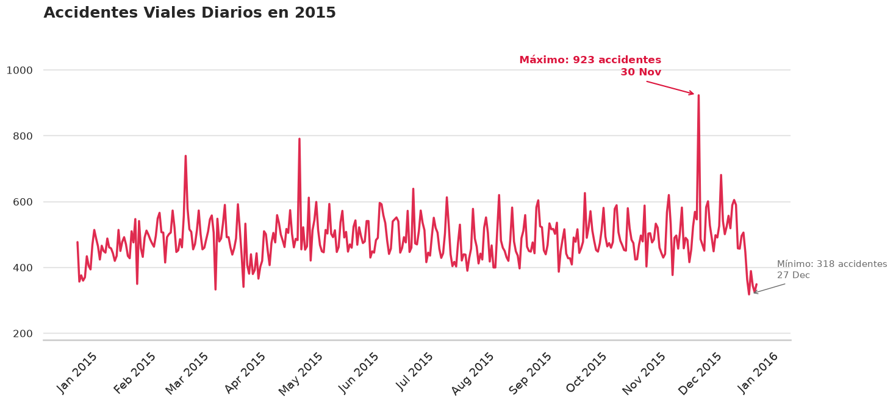
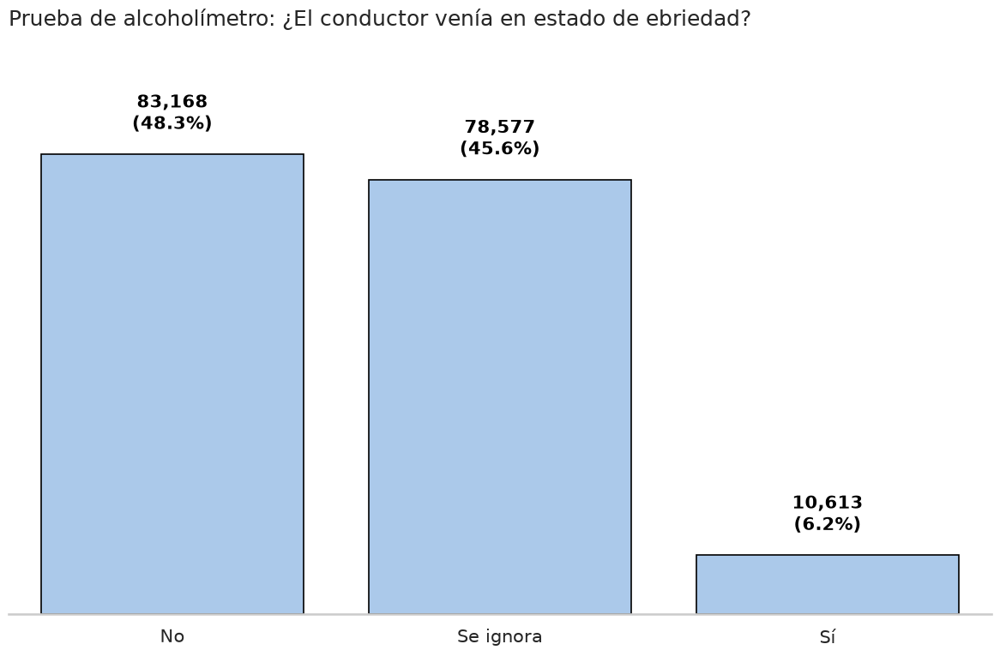
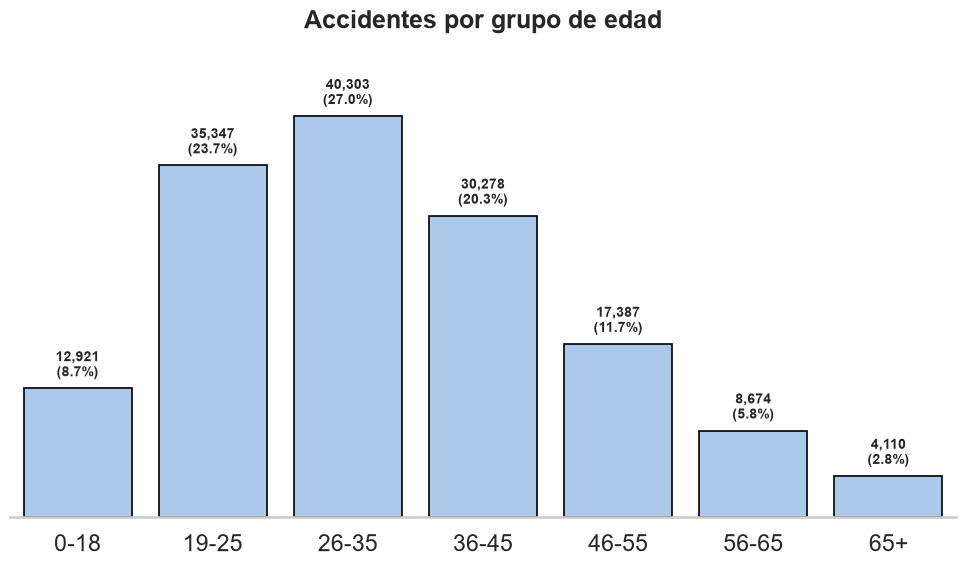
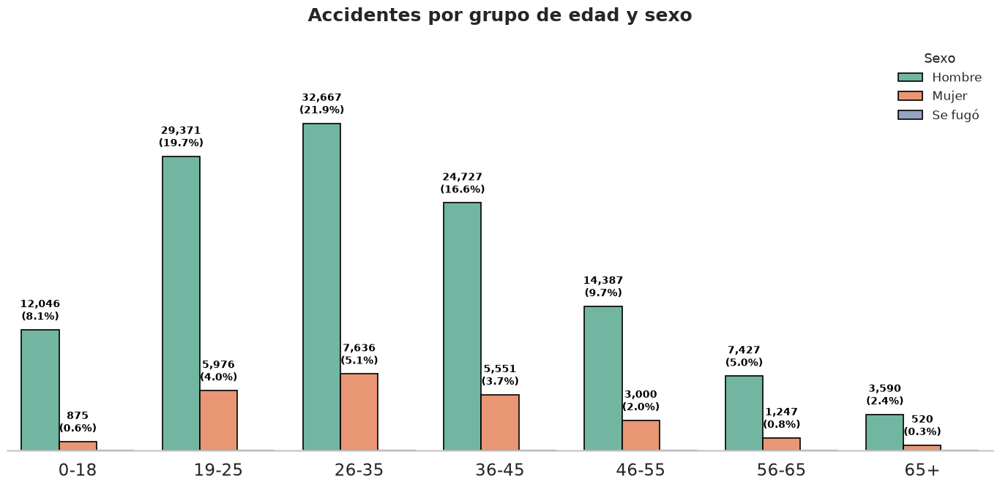
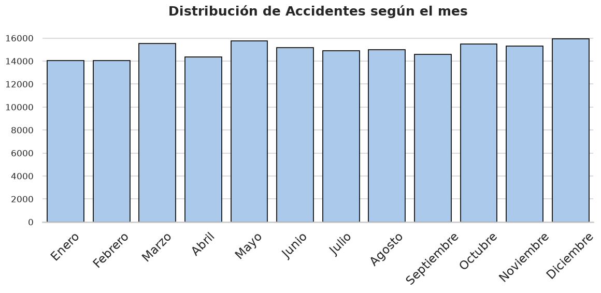
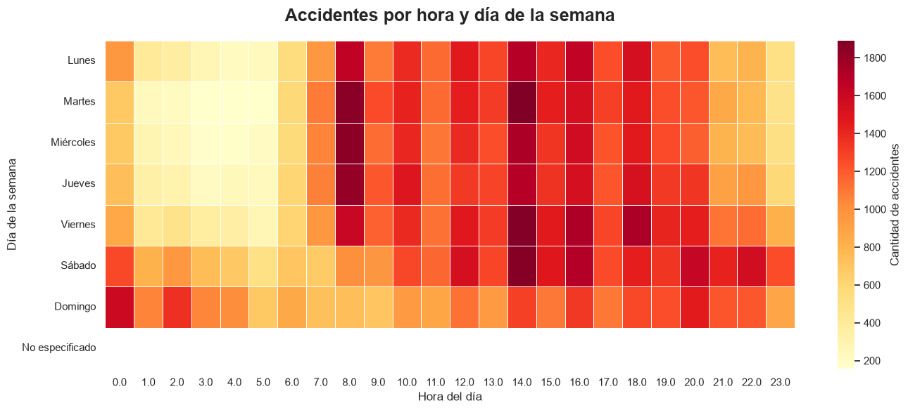

¿Alguna vez te ha pasado que estás en una reunión familiar y escuchas que a un tío, una prima o a un amigo "le chocaron"?
Dentro de nuestra cultura de calidez está el apoyar a nuestros seres queridos y automáticamente asumir que todo el mundo tiene la culpa de lo sucedido menos ellos; es decir, la culpa es del peatón que no se fijó que venía carro o quizás fue culpa del otro "wey" que se incorporó al carril en un boulevard o, incluso, puede que directamente le echemos la culpa al deplorable estado de las calles, a la infraestructura vial y a la cultura del automovilista en general.
Bueno, en esta lectura se ilustrará la información que posee una base de datos de accidentes viales que corresponde al año 2015, en donde a lo largo de 16 estados de la república se registraron más de 180,000 accidentes. Veamos cómo se ve el panorama general.

Parece que el espectro de accidentes fluctúa dentro de una frecuencia esperada entre los 400 y 600 casos mes a mes, a expceción de algunos picos como el de marzo, mayo o el más pronunciado de todos: el 30 de noviembre; por otra parte, después de todo el movimiento que implican las fiestas navideñas, parece que después de las fiestas se registra una menor cantidad de accidentes.
Y ¿Quién se hace responsable por ocasionar estos accidentes? A continuación, se desglosarán los accidentes registrados según el culpable.
De cada 10 accidentes, 9 fueron causados por el conductor.
La base de datos refleja una realidad aplastante: si bien no se tiene acceso a qué estados de la república en específico se utilizaron para esta muestra, los datos evidencian un problema muy focalizado, así que a partir de aquí el análisis se concentrará en estos 172 mil casos en donde el causante fue el conductor. ¿Será que una parte significativa de estos casos se debe al uso del teléfono celular mientras el conductor estaba al volante? ¿Vendría el conductor en sus cinco sentidos?

La mitad de los conductores pasaron la prueba del alcoholímetro y solo un 7% resultó positivo, pero entonces... ¿Qué pasa con ese 43% que está sin identificar? Solo con esta información no se puede sacar ninguna conclusión contundente sobre el estado de ebriedad; sin embargo, consideramos curioso que sea un porcentaje tan alto el que "se ignore".
Profundizando un poco más sobre las características de los automovilistas culpables, veamos si su edad nos revela algún dato de interés.

Los datos revelan que casi el 70% de los automovilistas se encontraban entre los 19 y los 45 años, indicando que en sí la mayoría de los accidentes los provocan automovilistas jóvenes. Veamos si, al incluir su edad, se encuentra algún otro patrón.

Se puede observar una inclinación significativa hacia el sexo masculino cuando se trata de analizar esta muestra, en donde se describe que los principales causantes de accidentes automovilísticos encajan en el perfil de un hombre entre sus 19 y 45 años.
Hasta ahora se ha intentado encajar en algún perfil a los causantes del accidente para ver si se encontraba un patrón; no obstante, falta analizar todavía su comportamiento fuera de su persona. Para esto, finalizaremos el análisis con una exploración en la frecuencia de dichos accidentes, ¿Será que noviembre es el mes donde más accidentes ocurren? ¿Diciembre no estará cerca debido a las fiestas navideñas?

Si bien el mes con más accidentes registrados sí es diciembre, no se puede considerar que hace una diferencia significativa, sobretodo tomando en cuenta que este análisis abarca solo un año, quizá sería bueno profundizar en este tema con más datos y ver cómo es el patrón a mayor escala para evitar segos.
Por lo pronto, veamos si se encuentra algo interesante al analizar los días de la semana y las horas en las que se registraron accidentes.

Parece que las incurrencias se concentran a partir de las 8 de la mañana y abarca gran parte de la tarde, lo cual encaja bien con el horario laboral del perfil jóven que se descubrió durante este análisis; a pesar de todo, es importante recordar que no hay una mejor hora para procurar manejar con cuidado y mantener a tus seres queridos siempre con bien. Respetemos nuestro tiempo y respetemos a la gente que nos rodea y, para finalizar, apreciemos nuestras vidas.